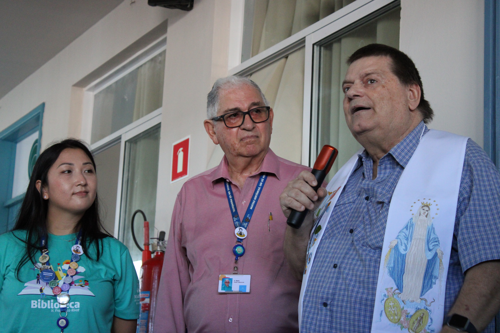

O Futuro Chegou: Marista recebe palestra sobre Inteligência Artificial e impacto nos empregos
O Colégio Marista Social Ir. Acácio, em Londrina, foi palco de uma noite especial dedicada ao futuro do trabalho. Na última segunda-feira, às 19h, alunos, pais e a comunidade ao redor — que se inscreveram previamente — se reuniram para uma palestra sobre Inteligência Artificial com dois convidados.
Luisa Canziani, membro da Comissão Especial sobre Inteligência Artificial da Câmara dos Deputados, e Alex Canziani, da Secretaria de Estado da Inovação e Inteligência Artificial, foram os responsáveis por conduzir a conversa sobre como a IA vai afetar — e criar — os empregos do futuro.
Além do conteúdo rico, a noite teve momentos que emocionaram. Luisa Canziani doou 10 computadores para um colégio da região, e o próprio Marista também fez sua parte com doações de equipamentos. A aluna Yasmin, do 2º ano A, foi premiada com uma visita ao dia de trabalho da deputada — uma experiência única de acompanhamento profissional. Já o participante mais jovem da noite, um menino de apenas 8 anos, ganhou um computador como forma de incentivar seus sonhos.
Para encerrar com chave de ouro, o evento contou com um momento de socialização regado a coffee com comida preparada pelo Marista — o que arrancou do diretor Luiz a frase certeira: ”Marista sem comida não é Marista.”
A iniciativa contou com apoio da Estação 42 e reforça o compromisso da instituição em conectar sua comunidade com os debates mais importantes do nosso tempo.